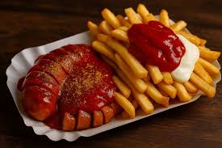

German cuisine
German cuisine is characterized by hearty and comforting dishes, with a strong use of meats such as pork, sausages, potatoes, and bread, as well as traditional recipes that vary greatly depending on the region. Among the most representative foods are sausages, schnitzel, sauerkraut, and pork knuckle, often served with potato salads, knödel, or spätzle. The culture of bread and beer is fundamental, and classic desserts like Black Forest cake and apple strudel also stand out, reflecting a simple, abundant cuisine closely tied to local customs.


baviera
Schnitzel
Currywurst
Sauerkraut
Schnitzel is a thin slice of meat. The meat is usually thinned by pounding with a meat tenderizer. Most commonly, the meat is breaded before frying. Breaded schnitzel is popular in many countries and is made using veal, pork, chicken, mutton, beef, or turkey
Sauerkraut is finely shredded white cabbage fermented with salt. This traditional German food becomes a crispy, tangy pickle thanks to the action of natural lactic acid bacteria, resulting in a probiotic that aids digestion and can be served with meats and sausages. Its preparation involves salting and massaging the cabbage until it releases water, then fermenting it in a jar for several weeks, creating a food rich in vitamins and beneficial bacteria.
Isabella Ibarra. Aranza Contretas. Mariana orozco. Ximena Rodriguez. Rebeca Anahi. Maria Fernanda.
Todos los derechos reservados.2026